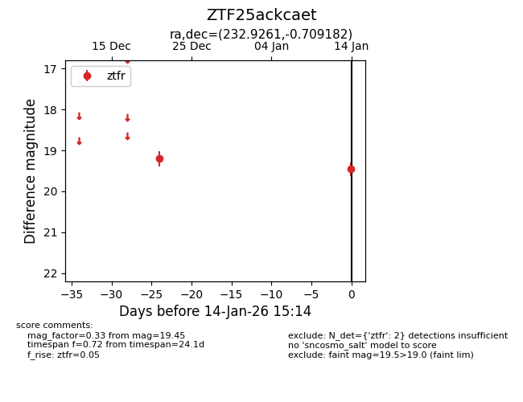
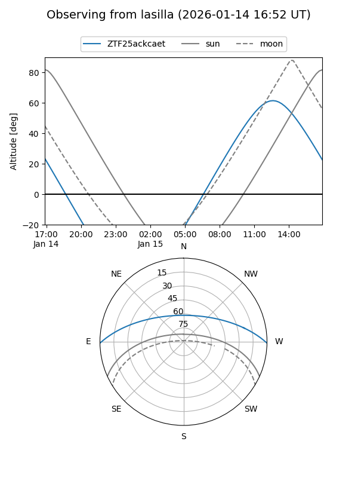
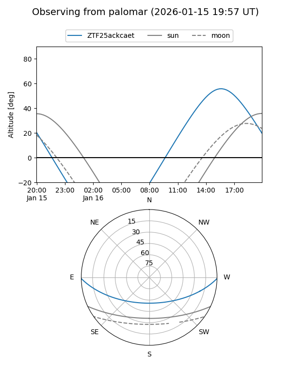

ZTF25ackcaet
Target ZTF25ackcaet at 2026-01-16 15:15
Aliases and brokers:
FINK: link
Lasair: link
ALeRCE: link
alt names
ZTF25ackcaet (ztf,fink_ztf)
Coordinates:
equatorial (ra, dec) = 232.9261,-0.70918
equatorial (HMS+DMS) = 15:31:42.27,-00:42:33.06
galactic (l, b) = (3.7157,+42.48589)
Flags:
Photometry:
last ztfr=19.45
2 ztfr detections
Lightcurve

Visibility


Additional plots